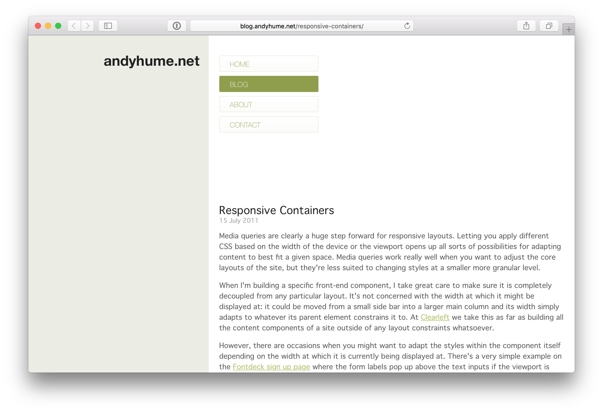
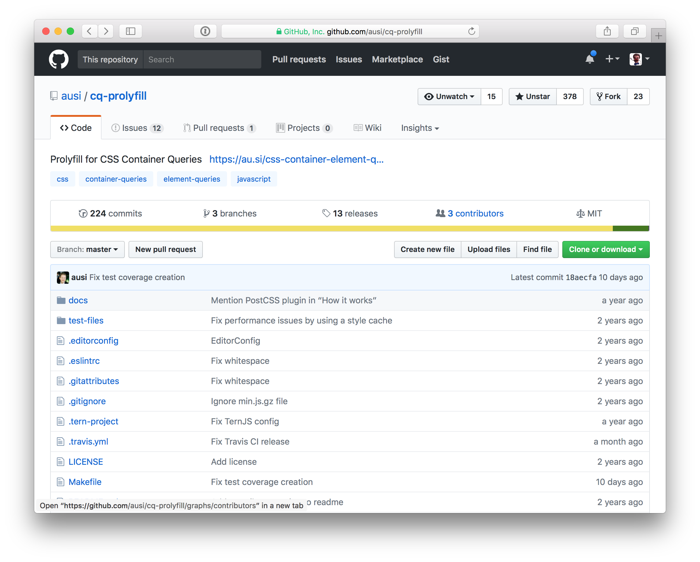
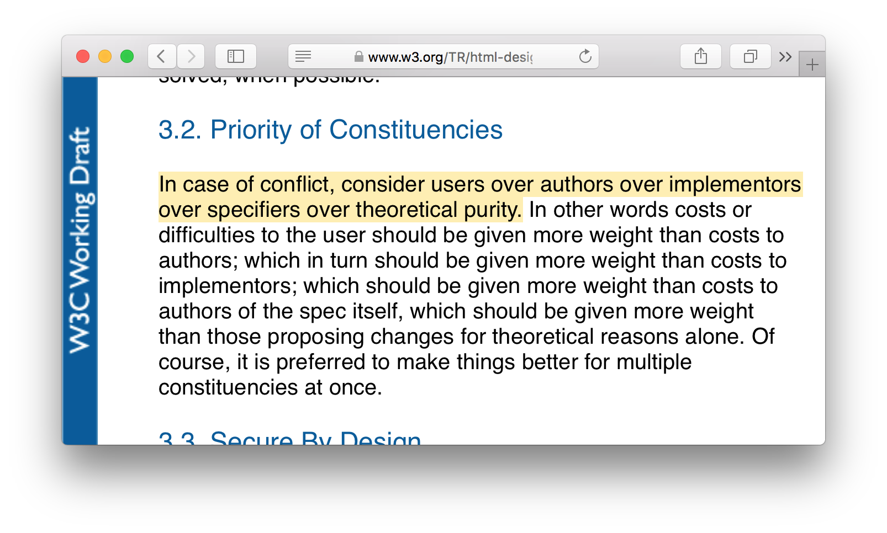

Contain
Your Excitement
Eric Portis ★ SmashingConf NYC ★ 2017-06-13
Who am I?
Eric!
The notes go here.
Do carriage returns work?
I wonder.
Developer Advocate @ Cloudinary Hanger-on @ Responsive Issues Community Group Lapsed printmaker-photographer @ Remote Island in Puget Sound
Developer Evangelist at Cloudinary, which is an image back-end for web and mobile developers. We help you manage image upload, storage, manipulation, and delivery. If you work with images, especially responsive images, like the ones I’ll be talking about tonight — Cloudinary can help you do that work better.
Before I worked at cloudinary, I managed the web store of a tiny fine art print shop in Denver Colorado… and got *really* upset with the way images worked within responsive layouts… yadda yadda yadda, I was spending hours in WHATWG mailing lists and writing a weekly newsletter for the responsie images community group, which spec’d and implemented the features I’m going to be talkign about today
I still like art, and I live on an island now where I kind of wander around and take weird infared photographs of kelp and things…
the island is called orcas island ; if any of you are ever out in the san juans ; it’s beautiful and you should all come visit
but enough about me
Element queries!
Let’s talk about element queries!
[click]
Or container queries, or whatever.
I suppose a brief note on terminology is in order
“Element?” “Container?”
Same-same.
We’ll get into the distinction between “element” and “container” queries a bit later, but for the first part of this talk, I and some folks that I’ll be quoting will use the terms more or less interchangably.
Whatever you call them, they’re
media queries for elements
And I’ll be using the terms to refer to an idea. In a nutshell: we should be able to adapt element’s styles based on their own state. Not just the state of the entire viewport.
Media queries are a whole-viewport-solution...
...designed to solve whole-document problems.
It’s worth taking a moment to think about about where Media Queries came from.
How many of are old enough to have written a print-specific stylesheet?
<link rel="stylesheet" type="text/css"
media="print" href="serif.css">
<link rel="stylesheet" type="text/css"
media="screen" href="sans-serif.css">
@media print {
* { font-family: serif }
}
@media screen {
* { font-family: sans-serif }
}
@media screen and (min-width: 400px) {
...
}
Well the original media queries spec, piblished sixteen years ago, opens with the following example. This is something that I’m just barely old enough to remember. But ten or twenty years ago, it was not unheard of for webmasters to provide one style sheet for screens, and a completely different stylesheet for print, containing page styles tailored for 8.5x11, high-resolution, black-and-white, laser-printed pieces of good-old-fashioned paper.
The media queries spec says, hey, this is a decently common use case -- how about we let you wrap these two sets of styles up into the same stylesheet, like this [click]. Media queries let you wrap your media-specific styles in a little @media block -- no separate stylesheet required.
As luck would have it, the spec authors also decided that, as long as they were letting you query media *types*, why not also let you query specific media *features*, say, width? [click]
And just like that, the media queries we all know and love -- along with so much of what we now call "responsive design" -- was born.
Responsive pagesModular components
And, when we we’re designing web pages, and we want to adapt those pages in response to facts about the whole viewport, they’re a great solution.
But increasingly, we’re not really designing monolithic *pages*. We’re designing modular *components*. And what we want, is the ability to set breakpoints directly on those components.
Whether you’re working with Web Components, React components, Brad’s Atomic Design elements , SMACSS modules or Object-OrientedCSS objects or BEM blocks, style-guides and pattern libraries , or even just the high-level notion that we should be designing from our content, out, rather than the page’s frame, in – media queries are a kludge and, in the words of Ian Storm Taylor, a hack .
.block {
background-color: lightblue;
}
@media (min-width: 797px) {
.block {
background-color: deeppink;
}
}
.block:min-width(100px) {
background-color: deeppink;
}
An example’s in order. Let’s say I've got a line of five little light-blue flexible components, like this.
And let’s say that when these boxes get to be 100px wide, I want to change them in some way – lets say I want to make them pink.
So, I'll write a media query. I'll figure out how wide the entire viewport is, just as each element hits 100px-wide. And use that whole viewport width as my min-width, like this [click]
Now what I’ve done here, that’s kludgy and bad, is bake a bunch of external state into what should just be a statement about the boxes. Remember, all I care about is the width the boxes. If they’re at least 100px wide, make them pink. But now I'm in a situation where, if many things *around* the boxes change -- let's say I tweak my margins [click], or change the number of boxes [click] -- The media query no longer does what I want, and I’ll have to change it. [click] That's bad!
What I really want to be able to say, here, is say exactly what I mean. When these specific *elements* are at least 100px wide, turn them pink. Like this [click].
That's an element query.

Responsive Containers
Here’s the first mention I that could find of the general concept – an clear, concise, and six-year-old blog post from Andy Hume, complete with a working, javascript-based implementation and demo of the idea. Andy called them “Selector Queries”.
Turns out, they were a good idea...
...it wasn’t too long before some of the smartest minds in the industry were calling element-level queries “the number one missing tool for responsive design.”
By 2014, serious efforts were underway to turn what had been just an exciting idea into an empowering reality.
But. There were problems. More on those later.
For now, I just want to take you on a journey of increasingly sad and desparate tweets.
It starts innocently enough, with earnest pleas and sound arguments.
But by 2015, impatience started to set in.
Front end developers began do wonder... is anyone listening?
How many times do we have to say it?
Doesn’t anybody understand what a big deal element queries would be?
Evidently, they don't. Diffrent developers have responded to this differently. Sadness is a common reaction.
Others have resorted to dry humor.
Bitterness (you know, sometimes the saddest tweets are the truest tweets...)
And desperate cries for help
Some, sadly, have been driven to madness.
My favorite response might be Nicole Sullivan's. Nicole thought, well, if I can't have element queries, at least I can have $20!
For those who, in 2017, still nurture hope, the message is loud and clear
Please excuse a wildly simplified explanation of
How Browsers Work
🔁
Problem #1:
Circularity
.block:min-width(10em) {
width: 5em;
}
.container {
display: flex;
}
.block:min-width(3em) {
border: 0.25em solid deeppink;
}
Super
califragilistic
expiali
docious
.container {
display: flex;
}
.block:min-width(3.25em) {
letter-spacing: 0.1em;
}
.wrapper {
border: 0.0625em solid deeppink;
}
.block:container(width > 10em) {
width: 5em;
}
(closest) Container (whose width is not influenced by its children) Queries

Conceived of + implemented by Martin Auswoger
🏚
Problem #2:
Breaks layout engine architecture
Remember our diagram from earlier? For twenty years, browsers have been following that path from left, to right, in a single pass.
Even if we can solve the problem of infinite loops -- a giant backwards arrow and, finite trips around the loop are still problematic. Especially when browsers assume and have always assumed that we can figure out which styles apply to what elements BEFORE we know how large those elements are.
Nicely summarized by Erika ETODO, aka fantasai, of CSS Working Group fame, in response to a question asked by none other than Sarah, about what it would take for Container queries to become a thing.
On Thu, 21 Mar 2013 at 3:08 PM, Elliott Sprehn wrote :
> This doesn't seem very easy to implement because it breaks the sequential
> processing model :
>
> 1. resolve style on elements such that you have a flattened set of
> properties.
> 2. layout the elements if things are different then the last time we did
> step 1.
> This would be a big undertaking in Webkit so I don't think it falls
> anywhere in the near future.
On Thu, Mar 21, 2013 at 6:34 PM, Elliott Sprehn wrote :
> I think there's a high implementation cost for this kind of thing
> It certainly could be done given enough time and someone very
> motivated...
And here’s Elliott Sprehn, WebKit implementor, saying the same thing on the www-style mailing list.
Container queries would be an unusually large amount of work, for implementors.
As we’ve seen, they’re’s also been an extraordinary amount of demand for them, from authors.
So we’ve got an unstoppable force, which is authors working with components in responsive designs, yearning for container queries — meeting an immovable object, which is 20 years of tightly-optimized code in browsers, whose fundamental architectural assumptions, container queries would break.
What happens when those things collide?

Luckily, we have this passage the HTML design principles to guide us through it. The priority of constituencies, which states that...
This is a beautiful statement, which, at multiple levels, implores the powerful few to understand and serve the relative many, who must live with the products and consequences of their work.
Also, it means, we win, right!? Authors over implementors! That means if we
want container queries, but implementors think they’re really hard or whatever – too bad! quit your bitchin’ and start re-architectin’!
But. In this hierarchy. There is one constituency whose concerns can, and should, matter more than ours. [click] Users. Which brings us to the last, biggest, and best reason that Container Queries aren’t a thing yet.
🐌
Problem #3:
Fundamentally slow
🐇
...and it needs to be FAST
First load paint isn't actually all that important, relative to everything coming over the network.
But after that, during resizes, animations, or user interactions – paint happens at the refresh rate of the display -- usually 60 times per second.
16 milliseconds
So that’s 16 milliseconds of time that the browser (and whatever javascript you may be running) have, to figure out get a page ready for display. Especially on low-powered mobile devices, every one of those milliseconds is precious.
Let me give you a high-level sense of what that number means... My computer is not a low-powered mobile device, it’s a 15" macbook pro.
And when I load a fairly simple, well-architected, responsive page that uses media queries, like, say SmashingConf.com, and measure the perf of the site while I resize the window a bunch, I can drill down with the dev tools and see that, most of these frames are happening right on schedule at 60FPS. And most of that time is idle, too – the browser is spending about 4-5 ms re-figuring layout and re-painting in response to the changing window size, but it has 10ms to spare.
We do actually drop a couple of frames every once and a while -- it looks here like I hit a major breakpoint right at the end of a 16ms beat, and the browser had to spend 17ms calculating and painting the new, significantly different layout... bad luck, but, still, visually nearly seamless.
So that gives you some sense of the time scales and headroom involved here. Now, let’s think about container queries.
diagram
Here's our pipeline again.
Even if we've figured out how to prevent infinite loops, and even if we re-architect browsers to be able to walk backwards, to do *a* loop – container queries, fundamentally, require taking one or more trips around the loop. Basing styles on styles and layout on layout is literally the whole point.
Every trip around the loop takes time. And if we start using container queries as liberally as we use media queries, today – container-querying all the things and especially nesting container queried components within container-queried components – we might be taking dozens or even hundreds of trips around the loop, each frame.
That's bad for users.
I’ve already mentioned one polyfill – Martin Auswoger’s cq-prolyfill – here’s another: Tommy Hodgin’s EQCSS. Tommy has done more work than anyone, anywhere, advocating for Container Queries. He’s built this pollyfill, stuffed it with features, and is amassing a frankly staggering library of demos. So I asked him for his worst-performing demo.
He kindly sent me this pricing comparison chart. And when I resize this, well, it's not pretty. The worst frames here are taking an order of magnitude more time than browsers like them to -- 150ms -- we’re missing ten frames in a row, here. Often. If you drill down and look what’s taking all of that time, Chrome Dev Tools shows you all of these little purple layout boxes with bright red corners, signifying forced reflows that the plugin needed to do as part of its container-querying-work. Each one is a small trip around the element-query loop for some subtree of the page.
And indeed - bad performance is what killed what was, to my knowledge, the first big production implementation of container queries. [Jonathan Snook] Shopify implemented a javascript-based form of container queries on their admin pages three years ago, but have since moved entirely away from them.
I asked why and got this pair of responses, which is just about perfect.
They were too slow. But boy do we miss them.
Paths forward
I'm happy to report that some very, very smart people have some very good ideas and are actively working on pieces of the puzzle.
Containment
to the rescue?
The first puzzle piece, we've already mentioned, actually. CSS Containment, in addition to getting us out of the infinite container query loop problem, may actually help offset some of the speed penalties inherent to container queries, too. When we prevent children from being able to influence the size or style of their parents, turns out, we can usefuly paralellize and optimize a bunch of layout work. So perhaps, a solution that brought a lot of both container queries but also layout containment to the web, wouldn't be so bad for layout performance after all.
I haven’t done a lot of testing here myself, but Paul Lewis published an example when the contain property landed in Chrome, wherein the layout time for a page dropped from 50-something ms down to 0.05ms, all because of this one weird CSS property.
https://developers.google.com/web/updates/2016/06/css-containment
Seems promising?
Asynchronicity
Knock. there? Async container queries Who’s knock!
The second idea: make sure that, even if our container querying is slow, we minimize the damage that we’re doing to users’ experiences by doing the work asynchronously.
Browsers respond to Media Queries synchronously. Which is to say, immediately after a media query toggles between true and false, the browser’s entire world stops for as long as it needs to so that it can respond to the change.
If we can't make container queries as performant as media queries, perhaps we can make them a little less world-stopping. We can let the browser re-schedule container query work, or even move it to another thread, so that we can continue to keep the rest of the user’s experience from feeling "stalled" or "stuck".
I’m happy to report that there’s a working implementation of this idea too, behind a flag in Chrome:
ResizeObserver
ResizeObserver.
The more I learn about ResizeObserver, the more I love it. It’s a purpose-built Container Query toolkit.
First and foremost, it lets you attach resize event listeners directly to elements. The current batch of prolyfills have to listen to a whole bunch of possibly-related events –– like window resizes and DOM changes -- and then check to see if any element resizing actually happened.
ResizeObserver also provides access to a stripped-down set of very-cheap-to-query element geometry that the browser is already maintaining. Current prolyfills all have to make extensive use of element.getComputedStyles, which forces a reflow to insure that the queried styles are up-to-date. ResizeObserver gives you access to fresh element geometry far more cheaply.
Next up is what we started with: asynchronusness. The callbacks that you register with ResizeObserver are treated as what browsers call "microtasks." Which means that the browser doesn’t drop everything and run them on the main thread as soon as a resize happens. Instead, they're batched up and run at a precise, later time: just after the next layout and just before the next paint. This is really important, actually. It ensures that you're not doing any work too early -- you're not going to be surprised by any additional layout changes that you weren't expecting -- or too late -- the browser will wait and paint when you're done. Most importantly, batched-up asynchronous callbacks don’t interrupt or forestall any other super-important intra-frame work - like, say, responding to user input.
Oh! And! ResizeObserver also features a smart way to deal with infinite loops. Because we're in Javascript land, it *can't* keep you from creating infinite layout→response→layout→response→layout→response loops. But it does use a thoughtful strategy – based on nesting-levels - to make sure that it breaks out of those loops in sensible ways in order to paint once a frame.
You've already seen examples of that. This slide deck, the one right in front of you now, is running a simple, ResizeObserver-based container-query implementation that I slapped together for the purposes of this talk. All of the looping examples that I've shown you flicker between states exactly once per frame, without freezing, stuttering, throwing a call stack exception, or preventing me from scrolling or otherwise interacting with the page, because they were built with ResizeObserver.
In short, ResizeObserver -- especially when combined with explicit style containment -- might give us everything that we need to implement smart, as-performant-as-possible container queries -- in JavaScript.
But, of course, we want to use them in CSS.
Which brings me to the last big idea that the smartest spec and browser folks in the world have about how to solve Container Queries. It's where we come in.
Houdini
How many of you have heard of Houdini?
Prolyfills
cq-prollyfill, eqcss
Syntax!
hacks...
Pseudo-selector
@ rules?
generalized conditionals for css
What can you do?
If you know some C and have been looking to get your hands dirty
Authors who are actually going to use the thing
Spec editors who can specify it
Browser vendors who are willing + able to implement it
- Yoav took the RICG over the line with responsive images, took a deep dive into performance, networking, and resource loading
- Layout engine is another dragon. The web needs another knight in shining armor.